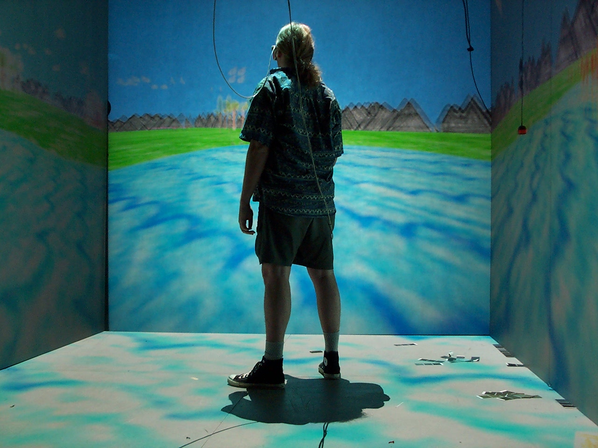

Machteld Stoop
New Fictional Technologies in the future..

New Identity Generator 'Icon'
Location Teleportation 'Icon'
Personal-Data Capsule 'Icon'
Mind Reader 'Icon'
Visueel Onderzoek:

The Common Sense, een sciencefiction-miniserie, is gebaseerd op het toekomstige grootschalige gebruik van een nieuwe technologische applicatie 'The Patch'. Dit is een ‘empathy device’, een soort prothese die het mogelijk maakt om de gevoelens en fysieke sensaties van een ander persoon direct te ervaren. Wanneer deze technologie het begeeft veroorzaakt dit massale desoriëntatie. Mensen trekken zich terug en zonderen zich af in hun huizen, aangezien ze niet langer weten hoe ze op een ‘natuurlijke’ manier, zonder technologische hulpmiddelen met elkaar moeten communiceren. Als het systeem weer online gaat, en The Patch weer functioneert, splitst de verhaallijn zich op en zien we twee mogelijke uitwerkingen van het plot. In het ene scenario ‘normaliseert’ de samenleving en wordt The Patch een onderdeel van het dagelijkse leven. In de tweede versie breekt een revolutie uit en verzetten burgers zich tegen hun afhankelijkheid van digitale technologieën. In de film komen beide verhaallijnen uiteindelijk samen in een gezamenlijke epiloog. Gilligan plaatst op deze manier vraagtekens bij het feit dat wij vandaag nu al beperkt zijn door technologische afhankelijkheid (van mobiele telefoons, iPads, et cetera) die bepalend is voor onze bestaanswijze, ze ondervraagt de manieren waarop wij onze intermenselijke relaties, vormgeven binnen een kapitalistisch bestel en fantaseert over een mogelijk alternatieve sociale orde.

Tabor Robak’s work employs computer generated imaging to create videos of invented worlds. Working in programs including Unity, After Effects, Photoshop and Cinema 4D, the artist explores a secondary, digital reality, rendered in what he refers to as a “Photoshop tutorial aesthetic” or a “desktop screensaver aesthetic.” His meticulously produced and filmed environments are cobbled together from sources both sampled and hand-modeled. The works are appropriative, both in their subject matter and aesthetic, using elements purchased and then edited for his purposes. They adopt the visual vocabulary of contemporary video games in order to isolate and comment upon digital space as an abstract fact, while simultaneously pushing up against the increasingly tenuous separation between perceptions of the digital and the real.


Pascal Dombis
…Cinema created movement-images and images in movement. When used artistically, the new technologies create fractals, rhizomes and the movements of and in the image. We have gone from the multiple facets of a mirrored reality to an epidermis of layered images. A panoptic of the interface and the artefact in which curved topologies can emerge from what seems to be a geometrically ordered outer skin, in a minimalist Baroque all of structural fluidity and infinite visual pathways. Between Alice through the looking-glass and Icarus soaring across infinite skies, the modernist monochrome makes a sudden reappearance in works consisting of multiple digital monochromes piled on top of one another to create fleshless luminous “post-digital mirrors”. But in this new “gaze craze” it is distance which allows you to attain a kind of indeterminateness without limits, a fourth dimension which opens onto an aesthetics of ephemeral and stratified temporality…